https://s.apache.org/atc-slack
#atc-up-and-running
#.center[Apache Traffic Control] #.center[Up and Running] ####.center[.middle[Dewayne Richardson <br/> [dewrich@apache.org](mailto:dewrich@apache.org)]] ####.center[Dan Kirkwood <br/>[dangogh@apache.org](mailto:dangogh@apache.org)] --- #.center[Traffic Control Slack] --- .left-column[ ## What is a CDN? ] .right-column[ A `Content Delivery Network (CDN)` is a network of caching proxy servers that are geographically located to optimize content delivery to users for high availability and performance. ] --- .left-column[ ## What is a CDN? ## Why build <br/>a CDN? ] .right-column[ Prediction that a tsunami of bits were coming to Comcast platforms and how do we scale that problem? ] --- .left-column[ ## What is a CDN? ## Why build <br/>a CDN? ## What is Traffic Control? ] .right-column[ `Traffic Control` is a caching server control plane suite of service-based components which are used to aggregate caching servers into a Content Delivery Network (CDN). ] --- .left-column[ ## Traffic Control Story ] .right-column[ * 01/2012: Work starts in Comcast * 10/2012: Comcast Production Deployment * ... * 02/2017: 1st Apache Incubator Release ] --- .left-column[ ## Traffic Control Story ] .right-column[ * ####May 16, 2018: ATC becomes a TLP! ] --- .left-column[ ## Traffic Control Story ## Traffic Control Community (as of Sept 5, 2018) ] .right-column[ * 20 Committers representing 7 different companies * 12 PMC Members * 9348 Commits * github.com/apache/trafficcontrol ] --- .left-column[ ## Traffic Control Story ## Traffic Control Community (as of Sept 5, 2018) ] .right-column[ * Latest Stable Release 2.2 - June 18, 2018 * Latest Dev Release 3.0 ] --- .left-column[ ## Goals ] .right-column[ * Everything in the CDN is Open Source <br/>(and appropriately licensed) * Use COTS hardware and Cloud * Loosely coupled components, stateless, scalable ] --- .left-column[ ## Goals ## Key Features ] .right-column[ * Client Routing * Operations Administration * Monitoring ] --- .left-column[ ### Comcast's CDN Stats ] .right-column[ * Terabits delivered per second * Petabits delivered per day * Billions of transactions at the edge per day * Petabytes of cache storage ] --- .left-column[ ### Comcast's CDN Stats ] .right-column[ * ### Exabytes total delivered * ### 10^18 or 1,000,000,000,000,000,000 ] --- #.center[.middle[Traffic Control <br/>Components]] --- ##.center[.middle[`Traffic Operations`]] ###.center[Config Management] ###.center[Administration UI/API(s) for operations to control the CDN] --- .left-column[ ## What is a `Delivery Service`? ] .right-column[ A group of settings and options to optimize content delivery for each customer on the CDN. ] --- .left-column[ ## What is a `Delivery Service`? ## What are `Parameters`? ] .right-column[ Configuration settings that are applied to any ATC component. ] --- .left-column[ ## What is a `Delivery Service`? ## What are `Parameters`? ## What are `Profiles`? ] .right-column[ Parameters that are bundled into groups ] --- .left[] --- #.center[.middle[Demo <br/> Traffic Ops]] ??? Point out Docker being used for Introduction and Training to Traffic Control ###.center[.middle[Dan Kirkwood]] --- ##.center[.middle[`Traffic Portal`]] ###.center[Config Management Improved] --- .left[] --- #.center[.middle[Demo <br/> Traffic Portal]] ###.center[.middle[Dan Kirkwood]] --- ##.center[.middle[`Operational Readiness Test (ORT)`]] ###.center[Config File Delivery] ###.center[Scheduled script for polling Traffic Ops APIs] --- ##.center[.middle[`Traffic Monitor`]] ###.center[Health Protocol] ###.center[Decider of health for edge caches and delivery services] --- #.center[.middle[Demo <br/>Traffic Monitor]] --- .left-column[ ## What is a `Consistent Hash`? ] .right-column[ A ring which it then uses to make sure that requests are routed to a target based on the configured weights. <br/> <br/>Authors Daniel Lewin and F. Thomas Leighton ] --- ##.center[.middle[`Traffic Router`]] ###.center[Content Routing] ###.center[Client requests dispatcher] --- .left[] --- .left[] --- .left[] --- .left[] --- .left[] --- .left[] --- .left[] --- .left[] --- .left[] --- .left[] --- .left[] --- .left[] --- .left[] --- #.center[.middle[Demo <br/>Traffic Router]] --- ##.center[.middle[`Traffic Stats`]] ###.center[Analytics] ###.center[Acquires and stores statistics about the CDNs] --- ##.center[.middle[`Traffic Vault`]] ###.center[SSL Keys] ####.center[Storage of SSL keys for Traffic Router's DNSSEC] --- .left[] --- .left-column[ ### Future Development ] .right-column[ * Self Service for tenants * Logging analytics * Pattern Based Consistent Hashing ] --- .left-column[ ### Future Development ] .right-column[ * URI Signing (RFC draft) * Additional caching software support (Nginx and others) * HTTP/2 - push content vs pull ] --- .left-column[ ## Thank you ] .right-column[ ## Jeff Bevill ## Brennen Fieck ## Rob Butts ] --- #.center[.middle[Slack Questions?]] --- ### Resources * These slides <br/> http://bit.ly/atc-up-and-running * These slides in pdf <br/> http://bit.ly/atc-up-and-running-pdf --- ### Resources * Traffic Control Website <br/> https://trafficcontrol.apache.org * Traffic Control Releases <br/> https://trafficcontrol.apache.org/releases * Apache Traffic Server <br/> http://trafficserver.apache.org --- ###.center[.middle[THE END]]